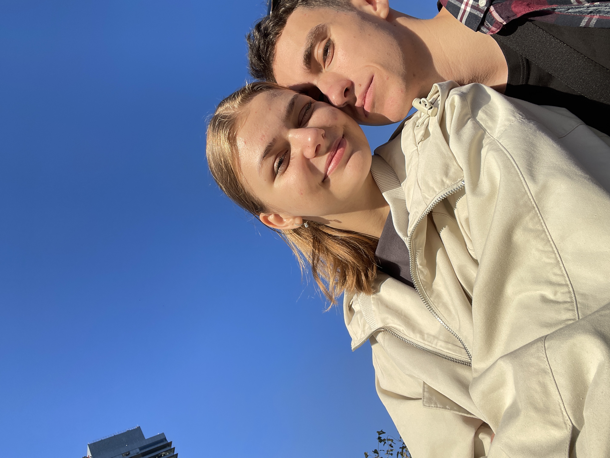
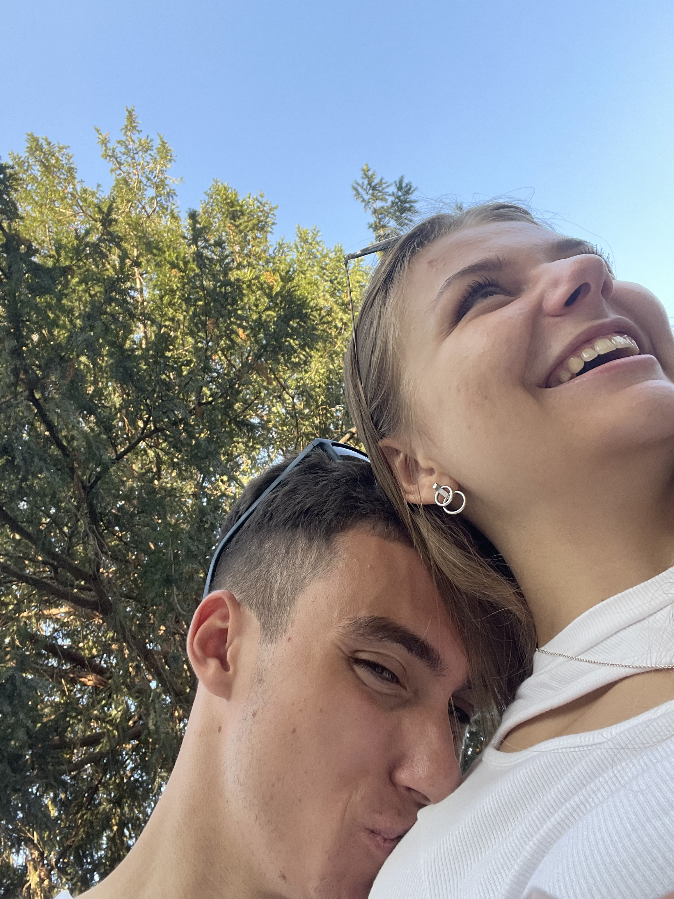
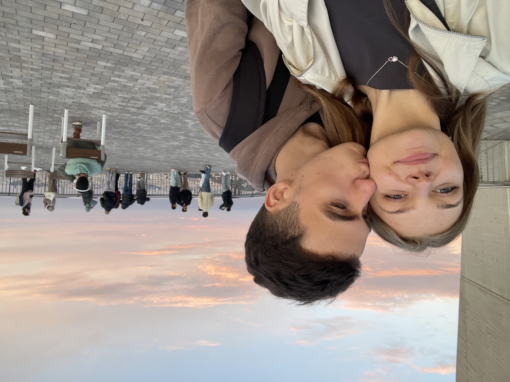
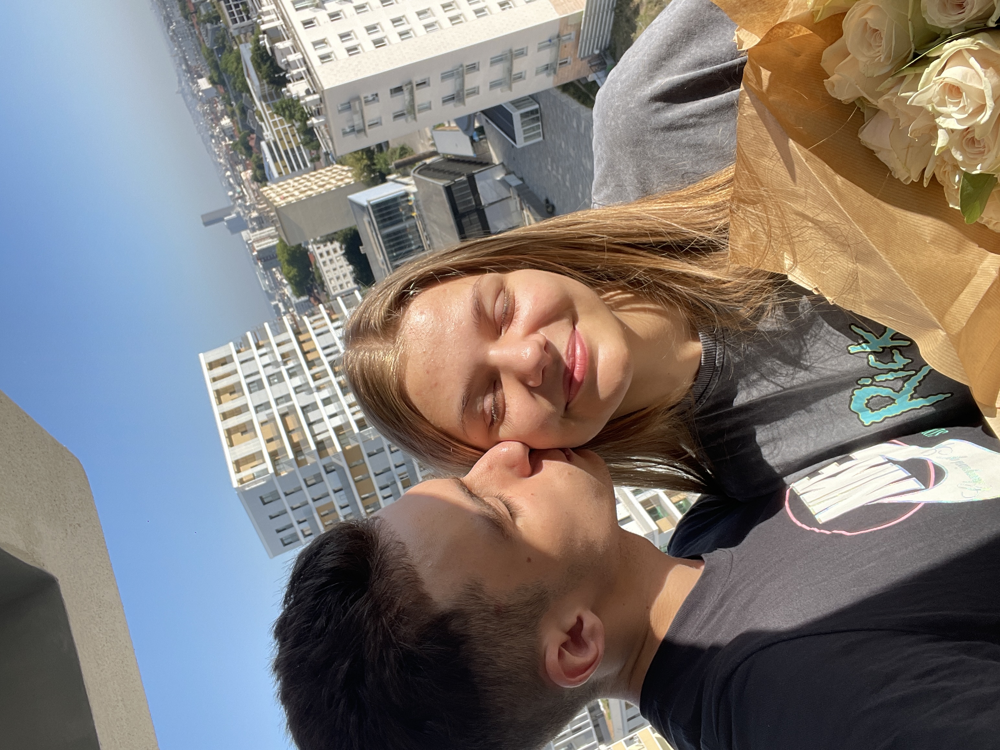

З нашим прешим рочкоооом!!!
Моїй найпрекраснішій Бусінці!
"Кожен момент з тобою був просто найкращим з усього що зі мною сталося"
Разом…
Ти мій всесвіт!
Ти зробила мій світ яскравішим.
Ти мій спокій, моя посмішка, моя мотивація, моя найкраща людинка.
Я завжди буду вибирати тебе і лише тебе.
З тобою світ є те справжнє відчуття дому котре не описати словами.
Ти є міх подих того немовірного щастя.
Дякую що ти завжди поруч зі мною у моєму сердечку!.
Our moments

Моє найбільше захоплення ♡

Моя улюблена посмішка

Емоції разом

Моя найпрекрасніша квіточка
Наша маленька історія
День коли все почалося
Цей день який перевернув моє життя повністю і лише у кращу сторону, день коли я снідав на кухні і отримав це маленьке повідомлення, котре із повної невідомості прзвело до чогось прекрасного чогось неймовірного...
Наше перше люблю
Як казав я спочатку це безмежно важкі для мене слова, адже слово "люблю" це не просто слова, а справді великі відчуття. Але ніколи не міг до цього подумати, що слова люблю та кохаю може справді бути замало...
Перший поцілунок
Це був справді найнеймовіший день у моєму житті котрий справді був вартий всього, кожної тої секунди з тобою, коли я просто не міг перестти любуватися тобою, аж до поки не стався він той перший, той неймовірний поцілуночок, котрий справді був у саме серце
Наші перші пригодки
Той момент коли коли всі відчуття навлишнього світу просто відйшли назад і нічого ніби не існувало окрім нас, і хотілося просто зануритися у цей всесвіт з тобою, ніколи його не покидати
Довга довга відстань
Як б не здавався цей період важкий, та довгий, це всеодно чатина нашої спільної історії, корий приніс і приносить нас багато уроків, та багато випробувань, але найважливіше ціль до котрої ми разом ідемо, адже ми ніколи нізащо не здамося
Наша перша велика датка
Хоч і мусимо цю датку ми проводити на жаль на відстані, проте буде у нас ше просто міліон таких насправді дат, котрі ми ще не раз справді разом зможемо відствяткувати, варто завжди розуміти що навіть за 6000 км ми разом і подолаємо всі відстані
Я люблю тебе більше ніж просто слова можуть описати, адже ми разом і назавжди!